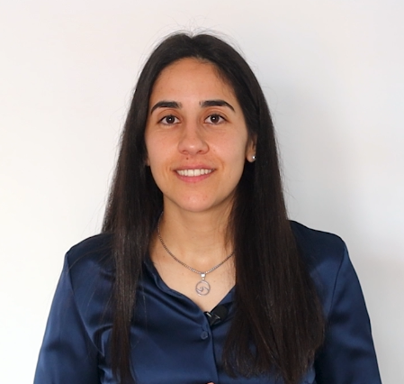
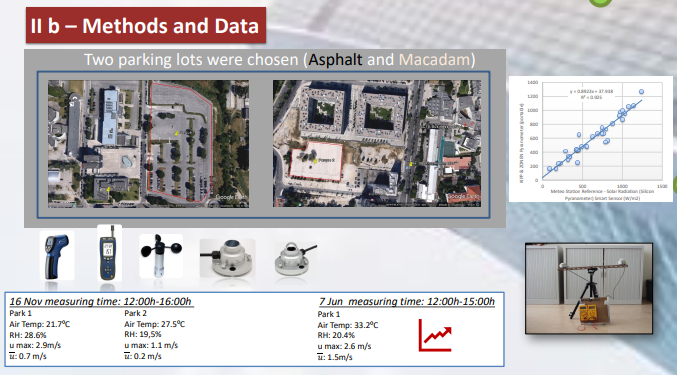
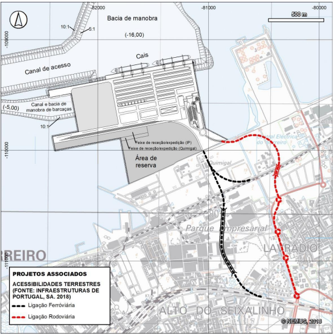

Sobre mim
Olá, o meu nome é Rita Seixas. Concluí recentemente uma pós-graduação em Geospatial Data Science e procuro desenvolver a minha carreira na área dos Sistemas de Informação Geográfica (SIG).
Vídeo de Apresentação
PÓS GRADUAÇÃO: NOVA IMS - GEOSPATIAL DATA SCIENCE
Esta pós-graduação proporcionou-me a oportunidade de desenvolver competências práticas em várias disciplinas diretamente relacionadas com os meus interesses em análise geoespacial, SIG e ciência de dados.
Disciplinas
- Análise & Visualização de Dados Espaciais
- Modelação em SIG
- Ciência & Sistemas de Informação Geográfica
- Estatística Espacial
- Programação Geoespacial
- Ciências Cartográficas & Aquisição de Dados
- Bases de Dados Espaciais
- Deteção Remota
Softwares
- SQL: Microsoft Access & ArcGIS Pro
- Python: Arcpy no ArcGIS Pro (VS Code)
- KNIME: Data mining & machine learning visual
Projectos
1. Deteção Remota
Avaliação de classificadores de imagens de satélite para deteção de zonas ardidas: caso do incêndio de 17 a 24 de junho de 2017, na zona do Pinhal Interior, em Portugal

Este projeto pretendeu comparar Classificadores Supervisionados e Classificadores não Supervisionados para detetar áreas queimadas nos incêndios de 2017 no Pinhal Interior, em Portugal. Para obter dados e analisar as informações, foram utilizadas imagens de satélite do Sentinel-2 e ferramentas como o NDVI (Índice de Vegetação por Diferença Normalizada) e a análise de Componentes Principais (PCA). Para a comparação final dos resultados, foi aplicado o classificador de Máxima Verossimilhança (supervisionado) e o Isodata Clustering (não supervisionado), com a validação conduzida por meio de matrizes de confusão.
• Ferramentas Utilizadas: Sentinel 2, ArcGIS Pro, NDVI, PCA, Classificador de Máxima Verossimilhança (supervisionado) e o Isodata Clustering (não supervisionado)
2. Base de Dados Espacial
Modelação de uma Base de Dados sobre desastres marítimos mundiais

Este projeto consistiu em construir uma base de dados espacial utilizando Microsoft Access e ArcGIS Pro para analisar Desastres Marítimos ocorridos entre 1983 e 2020. O processo incluiu a identificação das cardinalidades e relações entre as entidades relevantes, bem como a definição dos atributos. As consultas SQL permitiram atender às queries necessárias, enquanto a integração com o ArcGIS Pro, via ODBC, possibilitou a visualização espacial dos desastres através da criação de mapas.
• Ferramentas Utilizadas: Microsoft Access, ArcGIS Pro, SQL
3. Ciências Cartográficas
Técnicas de aquisição de informação georreferenciada na Atividade Vulcânica: Uma Perspetiva Cartográfica

O trabalho focou-se nas técnicas de aquisição de dados geoespaciais mais utilizados para estudar e monitorizar Atividade Vulcânica. Foram analisadas as técnicas de Fotogrametria, Termografia, Laser Scanning e Deteção Remota, importantes para criar mapas detalhados de áreas vulcânicas, assim como a sua importância no estudo e prevenção de desastres naturais.
• Ferramentas Analisadas: Fotogrametria, Termografia, Varrimento Laser, Deteção Remota por Satélite
4. Análise & Visualização de Dados Espaciais em ArcGis
Identificação dos locais mais fustigados pelo efeito das Ilhas de Calor Urbano no município de Lisboa

Neste trabalho, o objetivo foi compreender a distribuição espacial das Ilhas De Calor Urbano na cidade de Lisboa, utilizando ArcGIS Pro para visualizar dados espaciais e mapear as áreas mais afetadas. A análise envolveu identificar as zonas da cidade mais propensas ao efeito de calor urbano, assim como identificar elementos mitigadores, como espaços verdes e corpos d'água, que poderiam ajudar a combater esse fenómeno. Além disso, foi realizada uma análise de acessibilidade, calculando a percentagem de população que vive a menos de cinco minutos de um parque ou área verde.
• Ferramentas Utilizadas: ArcGIS Pro, Ferramentas de análise espacial
5. Modelação em SIG
Análise multicritério - Identificação dos locais onde seria mais oportuno instalar parques urbanos, no combate aos efeitos sentido pelas Ilhas de calor urbano, no Município de Lisboa

Neste projeto, desenvolveu-se uma Análise Multicritério para identificar os melhores locais para a instalação de novos parques urbanos em Lisboa, como forma de mitigar o efeito das Ilhas de Calor Urbano. Utilizei o método de Weighted Overlay no ArcGIS Pro, combinando cinco critérios relevantes, entre os quais: temperatura das ilhas de calor urbano, potencial de arrefecimento, distância a pé aos espaços verdes, exposição solar (mapa de aspeto) e número de residentes por quarteirão. A análise resultou num mapa de aptidão, destacando os locais mais adequados para novos espaços verdes.
• Ferramentas Utilizadas: ArcGIS Pro, Weighted Overlay (Análise multicritério), Raster Calculater, Modelbuilder, Slope, MDE, TIN, Hillshade, Countour, Mapa de aspeto, Viewshed, Tool Reclassify, Mapa de redes, Buffer.
6. Estatística Espacial
Interpolação estatística das anomalias de temperatura do ar, e a sua relação com as Ilhas de Calor Urbano, no município de Lisboa

Neste trabalho utilizaram-se dados de 80 estações meteorológicas espalhadas pela cidade e aplicaram-se métodos como IDW (Inverse Distance Weighted), Ordinary Kriging e Empirical Bayesian Kriging (EBK) de maneira a estimar-se a distribuição espacial da temperatura. A interpolação permitiu criar um mapa detalhado das anomalias de temperatura e comparar os resultados com o mapa padrão de Ilhas de Calor Urbano.
• Ferramentas Utilizadas: ArcGIS Pro, IDW, Kriging, EBK
7. Programação Geoespacial
Análise das anomalias da temperatura do ar e o efeito das “Ilhas de Calor Urbano” na cidade de Lisboa: Uma abordagem geoespacial com Python e ArcGIS Pro

Neste projeto desenvolveu-se um script em Python com a biblioteca Arcpy no ArcGIS Pro para analisar as anomalias de temperatura do ar e o efeito das ilhas de calor urbano em Lisboa. O código foi projetado para automatizar o processamento dos dados de temperatura de 80 estações meteorológicas e criar shapefiles com as médias de temperatura nas freguesias mais afetadas, como Santa Maria Maior e Parque das Nações. O script também permitiu identificar outliers e realizar análises estatísticas das temperaturas, evidenciando as áreas mais vulneráveis ao efeito de ilhas de calor urbano.
• Ferramentas Utilizadas: Python, Arcpy, Visual Studio Code, ArcGIS Pro
8. Data Mining
Técnicas de Machine Learning em contexto Geoespacial

Este trabalho pretendeu explorar técnicas de data mining em contextos geoespaciais, portanto, não detalha apenas o processo e os resultados obtidos de cada modelo aplicado, mas também valida a eficácia das diferentes técnicas de machine learning, assegurando uma compreensão robusta dos seus mecanismos e aplicabilidades. No âmbito dos modelos não supervisionados, aplicou-se o clustering, incluindo técnicas como K-means, para segmentar os dados em grupos com base nas suas semelhanças, sem recorrer a rótulos predefinidos. Os modelos supervisionados, como as Redes neuronais artificiais e as Árvores de decisão, para prever e classificar novos dados, com base nos padrões aprendidos a partir dos conjuntos de treino.
• Ferramentas Utilizadas: KNIME Analytics, Excel, e ArcGIS Pro
MESTRADO: EXPOSIÇÃO CIENTÍFICA & INVESTIGAÇÃO ACADÉMICA
Trabalhos desenvolvidos no âmbito da investigação científica e académica, com foco em clima urbano, sustentabilidade e planeamento territorial.
9. Poster Científico
A influência do albedo em veículos no ambiente urbano

Poster científico desenvolvido no âmbito do estudo do clima urbano, analisando o impacto do albedo aplicado à superfície dos veículos na mitigação do aquecimento urbano. O trabalho foi apresentado na 10ª Conferência Internacional do Clima Urbano, em Nova Iorque.
• Evento: Exposição do projeto na 10ª Conferência Internacional do Clima Urbano, Nova Iorque
10. Tese de Mestrado
A construção do futuro Terminal de Contentores de Lisboa, no Barreiro

Esta dissertação centrou-se na análise da proposta de construção de um novo terminal de contentores no Barreiro, enquadrando o projeto no contexto do transporte marítimo de contentores à escala mundial e nacional. O estudo procurou compreender as razões estratégicas associadas à expansão da capacidade portuária no Porto de Lisboa e avaliar a adequação da localização proposta.
A investigação incluiu a análise de Instrumentos de Gestão do Território, planos estratégicos e outros projetos estruturantes, com o objetivo de verificar a compatibilidade territorial da infraestrutura. Foram ainda avaliados potenciais impactes sobre as vertentes ambiental, económica, social e urbana, através da construção de cenários prospetivos pessimista, otimista e invariável.
• Principais dimensões analisadas: Planeamento do território, logística portuária, impacte ambiental, desenvolvimento económico e ordenamento urbano
Contacto
Email: rita-seixas@hotmail.com